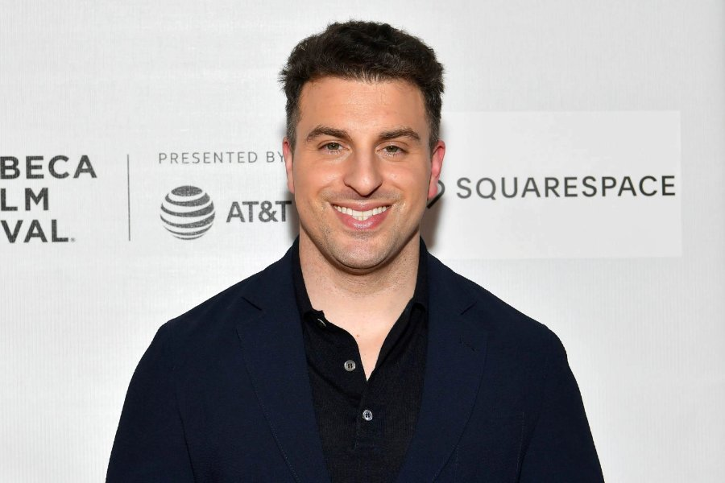

← Back to the founder directory

Brian Chesky
From an industrial designer who couldn't make rent to the co-founder and CEO of Airbnb.
- Born
- 29 August 1981, Niskayuna, New York, USA
- Known for
- Co-founding and leading Airbnb
- Industry
- Travel tech, online marketplace
- Education
- BFA in Industrial Design, Rhode Island School of Design (2004)
Early life and education
Brian Chesky grew up in Niskayuna, New York, the son of two social workers, with a younger sister, Allison. He loved ice hockey as a child, then art: he drew replicas of paintings and redesigned toys and shoes, and later became interested in landscape architecture and urban planning. He studied industrial design at the Rhode Island School of Design (RISD), graduating in 2004, and it was there that he met his future co-founder Joe Gebbia.
From 3DID to San Francisco
After graduating, Chesky moved to Los Angeles and worked as an industrial designer at 3DID, designing toys, guitars and medical equipment. He grew disillusioned with the work and the long commutes, cut his hours in 2007 to focus on furniture design, and in October 2007 moved to San Francisco to live with Gebbia. He didn't have enough money for the rent.
Three airbeds
That month, a design conference filled every hotel in the city. Gebbia and Chesky turned their loft into a bed and breakfast with air mattresses and breakfast included. They bought three airbeds and hosted three guests, who each paid about $80 for the night. They then invited Nathan Blecharczyk, a former roommate of Gebbia's and a skilled developer, to build a website, which launched in early 2008 as Airbedandbreakfast.com.
The "trough of sorrows"
The early months were rough. The site got only two bookings around the 2008 SXSW festival, one of them Chesky's own. A relaunch before the Democratic National Convention in Denver brought heavy press attention, but the founders struggled to turn it into lasting traction. Each of them was left with about $20,000 of debt. To stay afloat they bought commercial cereal and repackaged it as "Obama O's" and "Cap'n McCains", collectible boxes that brought in roughly $20,000 to $30,000 and national press, and won over Y Combinator's Paul Graham.
Y Combinator and growth
In early 2009 the three co-founders joined Y Combinator, which gave them $20,000 in seed money and mentoring. By the end of the programme, Sequoia Capital had invested roughly $600,000, and the company was renamed Airbnb. Chesky became CEO in fall 2010. In 2011, after a host's home was vandalised and his first response was widely criticised, he publicly acknowledged the failure, expanded customer service and set up a fund to protect hosts. He later called it a rebirth for the company.
Pandemic and IPO
When Covid-19 hit travel in 2020, Airbnb restructured, cutting about 1,900 employees, and Chesky took a more hands-on role in daily operations. In December 2020 the company went public, one of the largest IPOs in US history, with a valuation above $100 billion. Its shares rose 113% on the first day.
"Founder mode"
In September 2024, a talk Chesky gave at a Y Combinator event on his leadership style inspired Paul Graham's essay "Founder Mode", sparking widespread debate. Chesky said it was about leaders staying close to their products and projects, not about micromanaging, and that more women should feel empowered to lead the same way.
Timeline
- 1981Born in Niskayuna, New York.
- 2004Graduates from RISD with a BFA in industrial design.
- Oct 2007Moves to San Francisco; hosts the first three paying guests on airbeds.
- 2008Blecharczyk joins as the third co-founder; Obama O's and Cap'n McCains fund the company.
- 2009Joins Y Combinator; Sequoia invests; the company becomes Airbnb.
- Fall 2010Becomes CEO of Airbnb.
- 2011Responds to the host-vandalism crisis with customer-service and host-protection reforms.
- 2020Layoffs of about 1,900 staff; Airbnb goes public in December.
- 2024His Y Combinator talk sparks the "founder mode" debate.
Recognition and giving
- Time 100 (2015); named a Presidential Ambassador for Global Entrepreneurship by President Obama (2015)
- Joined The Giving Pledge (2016)
- Fortune's World's Greatest Leaders (2017); honorary doctorate from RISD (2017)
- Bay Area Executive of the Year, American City Business Journals (2018)
- Fortune's 100 Most Powerful People in Business, No. 43 (2024)
- $100 million pledge to the Obama Foundation for the Voyager Scholarship (2022)
Sources
Written from public information, including Wikipedia, A Touch of Business and Hostaway. Figures such as the Sequoia investment and cereal revenue vary slightly between sources, so rounded amounts are used.